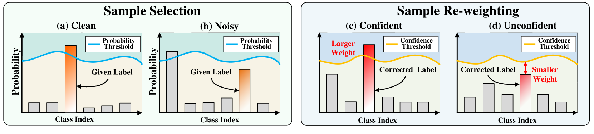

Self-Adaptive and Class-Balanced Sample Selection and Re-weighting
(a-b) Self-adaptive and class-balanced sample selection based on predicted probability w.r.t. given labels. The blue curve indicates the class-specific selection thresholds. (c-d) Self-adaptive and class-balanced sample re-weighting based on correction confidence. The orange curve represents the class-specific confidence threshold.